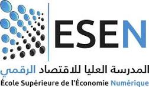

Startup Act Tunisien
Analyse du programme national de labellisation Startup Act (Loi 2018-20 du 17 avril 2018) · 2019–2026 · données corrigées et recalculées depuis les PDF officiels des 88 sessions de startup.gov.tn
Évolution annuelle — officiel
Évolution annuelle — corrigé PDF
Répartition par secteur (Top 8) — base extraite
Labels par mois — officiel vs corrigé PDF
Création des startups par année — base extraite
Cumul — officiel (KPI-27)
Cumul — corrigé PDF (KPI-27)
Âge à la labellisation — base extraite (KPI-32)
Dashboard Avancé — Données Extraites
Visualisations interactives basées sur les 88 JSON de session · 3 079 candidatures officielles · 3 571 lignes PDF détaillées · 3 574 corrigées (+3 ajournés hors PDF)
Les graphiques qui n’ont pas d’équivalent officiel (secteurs et détail des décisions) sont étiquetés « lignes PDF/JSON » et ne sont pas présentés comme des compteurs institutionnels.
📈 Évolution annuelle — officiel
📈 Évolution annuelle — corrigé PDF/JSON
🏢 Top 10 Secteurs — lignes PDF/JSON
📊 Répartition des décisions — lignes PDF/JSON
📅 Labels par mois — officiel vs PDF/JSON
🔄 Funnel Conversion Prélabel → Label
⚡ Taux de Succès par Année
🏷️ Répartition Label vs Pré-label — officiel
🏷️ Répartition Label vs Pré-label — corrigé PDF/JSON
Sessions de Labellisation
88 sessions · 3 079 candidatures officielles · 3 571 lignes PDF · 3 574 corrigées (+3 ajournés) · 1 356 labels · 641 pré-labels
Chronologie des 88 sessions (2019 → 2026)
Taux d'acceptation par année
Candidatures vs Labels par année
Croissance annuelle des candidatures (KPI-26)
| Session | Candidatures officiel → corrigé | Labels officiel → corrigé | Pré-Labels officiel → corrigé | Taux officiel | Commentaires |
|---|
Base de données des Startups
922 startups labellisées
| Nom | Secteur | Création | Label | Fondateurs | Forme juridique (KPI-34) |
|---|
Analyse sectorielle
18 secteurs d'activité · Concentration : Top 4 = 51,6% de toutes les startups
Classement des secteurs
Répartition en %
Évolution annuelle par secteur — Top 5 (KPI-39)
| Secteur | Startups | % | Accumulé |
|---|
Répartition Géographique
48% des startups dans le Grand Tunis · Dernières données disponibles : Rapport Annuel 2021
Carte choroplèthe de la Tunisie — concentration par région
Carte de référence (OpenStreetMap)
Répartition par région (%)
Déséquilibre régional
Rapports Annuels — Analyse
3 rapports officiels parsés · Indicateurs clés extraits par NLP
Comparaison inter-annuelle
PDFs des Sessions
88 rapports de labellisation · Cliquez pour consulter
Données Extraites des 88 PDFs
Tableau interactif · 3 571 lignes PDF détaillées · 3 574 candidatures corrigées (+3 ajournés) · Recherche, filtres, export CSV/Excel/JSON
- Source : Extraction automatique via Firecrawl + PyMuPDF des PDFs officiels des sessions de labellisation
- Format : Chaque session = un fichier JSON contenant
entrees[](lignes startups) +session_data(totaux corrigés) - ⚠ Fiabilité : Extraction automatique — noms de startups et fondateurs parfois approximatifs. Les totaux officiels corrigés (1 356 labels · 641 pré-labels · 153 retraits) restent la référence dans
sessions.json
Vue officielle par session
Cette table conserve les compteurs institutionnels et leur rapprochement PDF : la somme des 88 sessions donne 3 079 candidatures officielles, 1 356 Labels et 641 Prélabels. La colonne Labels corrigés — notre travail reprend les valeurs recalculées à partir du réexamen PDF. La colonne corrigée affiche 3 571 lignes PDF ; la série d’étude ajoute séparément 3 ajournés hors PDF, soit 3 574 candidatures corrigées. Le cas S62 est notamment 39 → 46.
| Session | Candidatures officielles | Candidatures corrigées (PDF + ajournés) | Labels officiels | Labels corrigés — notre travail | Prélabels officiels | Retraits | Reportés | Ajournés | Refus Label (dét.) | Refus Prélabel (dét.) | Lignes PDF |
|---|
| Session | Startup | Secteur | Décision | Fondateurs | ⚠ |
|---|
Rapports Annuels — PDFs Complets
Les 3 rapports officiels du Startup Act · Consultez, téléchargez
Parcours Prélabel → Label
Conversions, prélabels accordés, retraits · extraction PDF v7 (3 sessions complétées manuellement)
Différence avec les 153 retraits : le 272 concerne des pré-labels jamais devenus labels ; les 153 retraits concernent des labels accordés puis révoqués (startup labellisée, puis son label a été retiré). Deux populations différentes → on ne les additionne pas et on ne les compare pas directement.
Prélabels accordés vs Conversions prélabel→label (par année)
Composition des labels : nouveaux vs conversions (par année)
Retraits de labels (par année)
Répartition des 1 356 labels
| Session | Cand. | Prélabels accordés | Conversions → labels | Retraits | Labels issus de conversion |
|---|
Corrections des Données des Sessions
Divergences documentées entre le tableau web, les PDF officiels et les lignes détaillées · 88 sessions vérifiées
/sessions de startup.gov.tn présentait des divergences historiques sur certains labels et prélabels. Les données ont été ré-extraites des PDF officiels (public/data/session-pdfs/) par un parseur positionnel (v7), puis auditées indépendamment et vérifiées manuellement. Le corpus final couvre 88 sessions.
Audit externe — pourquoi les compteurs divergent
L’audit joint a été exécuté comme contrôle indépendant à partir des extractions disponibles ; il n’a pas modifié le dépôt et n’a pas prétendu réextraire à nouveau les 88 PDF. Son résultat principal est que 3 338 candidatures n’est pas reproductible avec les sources actuellement vérifiées. Le chiffre institutionnel reproductible reste 3 079.
| Série | Total | Ce que le total mesure |
|---|---|---|
| Scénario A — institutionnel | 3 079 | Compteur officiel publié par session |
| Scénario B — lignes PDF | 3 555 | Occurrences et décisions présentes dans les blocs PDF |
| Scénario B corrigé | 3 558 | 3 555 lignes PDF + 3 ajournés hors PDF |
Interprétation : les 476 occurrences d’écart (`3 555 − 3 079`) ne sont pas 476 candidatures supplémentaires prouvées. Les conversions Prélabel → Label sont des décisions ultérieures sur un dossier, les retraits sont des événements postérieurs, et un Reporté ne doit pas être compté deux fois sans identifiant de dossier. Les ajournés hors PDF restent dans une catégorie séparée.
Candidatures officielles et ajournements
Les 3 079 candidatures officielles sont la référence publiée par session. Elles sont conservées séparément des lignes détaillées des PDF. La colonne Ajournés reprend les ajournés validés dans ce travail : 3 dossiers au total, répartis sur deux sessions (03/2019 : 2 ; 06/2019 : 1). Le commentaire 04/2019 n’est pas retenu dans ce filtre validé faute de dossier ajourné confirmé dans le rapprochement PDF.
| Périmètre | Officiel | Lignes détaillées | Écart descriptif | Statut |
|---|---|---|---|---|
| 88 sessions | 3 079 candidatures | 3 571 lignes détaillées | +492 lignes | Unités différentes — compteur officiel conservé |
| 03/2019 | 16 candidatures | 14 lignes : 12 Labels + 2 refus | +2 | 2 Ajournés dans le commentaire officiel |
| S62 · 05/2024 | 39 candidatures officielles | 46 lignes documentaires | +7 lignes | 14 Labels au total (dont 5 conversions) · 5 Prélabels · 2 retraits · 4 décisions administratives non précisées |
Cas S62 : le site officiel publie 39 candidatures officielles — ce n’est ni 46 ni 42. Les 4 dossiers à statut « Décision non précisée — motif administratif » sont bien des candidatures incluses dans ces 39, mais le PDF ne publie pas pour elles une décision Label/Prélabel. Le PDF contient 46 lignes documentaires : 39 candidatures officielles + 5 conversions Prélabel → Label + 2 retraits de Label. Dans le détail, le total est de 14 Labels accordés (9 Labels initiaux + 5 conversions), 5 Prélabels accordés, 7 Labels non accordés, 14 Prélabels non accordés, 2 retraits et 4 décisions non précisées. Le commentaire « Non présentation des états financiers… » signifie que le dossier n’a pas présenté les états financiers exigés par le texte réglementaire ; c’est un motif administratif du PDF, pas un Reporté et pas une décision normalisée Label non accordé. La table « Vue officielle par session » reste la source des compteurs publiés ; la table « Lignes détaillées des PDF » sert au contrôle des entreprises et décisions.
⚠ Tableau institutionnel — startup.gov.tn (référence publiée, non corrigée)
| Session | Candidatures officiel | Candidatures corrigé | Écart lignes PDF | Labels officiel | Labels corrigé | Prélabels officiel | Prélabels corrigé | Lignes PDF | Ajournés hors PDF | Statut |
|---|
✅ Tableau corrigé — preuve PDF primaire (valeurs utilisées pour l’étude)
| Session | Candidatures officiel | Candidatures corrigé | Écart lignes PDF | Labels officiel | Labels corrigé | Prélabels officiel | Prélabels corrigé | Lignes PDF | Ajournés hors PDF | Catégories PDF |
|---|
📐 Deux méthodes de calcul des candidatures
La preuve primaire de cette étude est le PDF officiel. La colonne « corrigé » compte les 3 571 lignes PDF et ajoute séparément 3 ajournés signalés par les commentaires officiels mais non nommés dans les PDF, soit 3 574 candidatures corrigées documentaires. La colonne « officiel » conserve le compteur publié par Startup Tunisia. Les deux séries sont affichées ensemble et ne doivent pas être confondues : une conversion ou un retrait peut ajouter une ligne documentaire sans constituer une nouvelle candidature institutionnelle.
| Périmètre | Candidatures selon site officiel | Candidatures corrigées selon PDF | Écart corrigé − officiel | Interprétation |
|---|---|---|---|---|
| 88 sessions | 3 079 | 3 574 | +495 | 3 571 lignes PDF + 3 ajournés hors PDF explicitement signalés ; noms non identifiés |
| 03/2019 | 16 | 16 | 0 | 14 lignes PDF identifiées (12 Labels + 2 refus) + 2 ajournés hors PDF ; entreprises non identifiées |
| 04/2019 | 51 | 52 | +1 | 52 décisions documentaires ; aucun Ajourné validé dans le filtre final |
| S62 · 05/2024 | 39 | 46 | +7 | 46 lignes : 39 dossiers + 5 conversions + 2 retraits |
Reporté, Ajourné et ligne héritée : ne pas compter deux fois
Reporté signifie qu’un dossier est déplacé vers une session ultérieure (par exemple Tunisia Biotech : 02/2020 → 03/2020, Campus Numérique : 03/2020 → 04/2020, RYBSEN : 10/2024 → 11/2024). Le registre PDF conserve les deux apparitions pour documenter le parcours, mais une série de candidatures distinctes ne compte le dossier qu’une seule fois. Ajourné désigne ici un dossier signalé par un commentaire officiel sans ligne PDF nominative : 2 en 03/2019 et 1 en 06/2019, soit 3 au total.
Pour 07/2019, la page officielle publie 28 candidatures, 15 Labels et 8 Prélabels, avec le commentaire « 14 Labels et 1 Prelabel (de la session de mai) ». Le PDF contient 29 lignes documentaires ; la ligne héritée de mai est signalée comme historique et ne doit pas être ajoutée comme une nouvelle candidature. Ainsi, 29 lignes PDF ≠ 29 candidatures distinctes : le compteur officiel reste 28 et le volume documentaire reste 29.
Fiche de Cadrage
Étude stratégique sur le Startup Act tunisien · projet national Livre Blanc Startup Act
📄 Fiche de cadrage — Étude stratégique
↗ Ouvrir le PDFLivrables — Les 6 Axes + AE1
Tous les rendus du projet : 6 axes de veille (Charte de cadrage Word + Plan de veille Excel convertis en PDF) + livrables racines · cliquez sur un rectangle pour consulter
⬇ Données et rapports accessibles depuis le site
Les fichiers contrôlés sont également téléchargeables directement depuis le dépôt GitHub public. Les liens s’ouvrent dans un nouvel onglet et correspondent au commit final publié.
📁 Documents par Axe (PDF des Excel & Word)
📄 Livrables racines
Insights & Interprétations
8 conclusions clés de l'analyse quantitative
Évolution du taux d'acceptation
Labels vs Retraits vs Conversions
Étude Quantitative du Startup Act Tunisien
88 sessions · 2019–2026 · 1 356 Labels · 641 Prélabels · Analyse longitudinale, sectorielle et géographique
Auteur : Faker BEN NOOMEN · Formation : Mastère VIC (ESEN Manouba × ISCAE Manouba) · Version : 24 août 2026
Résumé. Cette étude analyse quantitativement les sessions de labellisation du Startup Act tunisien à partir de 88 sessions (2019–2026), des rapports annuels officiels et des comptes rendus PDF. Après correction, le corpus totalise 1 356 Labels et 641 Prélabels, soit 1 997 décisions positives. Le taux de Label pondéré est de 44,0 %.
Encadré méthodologique : le conflit 3 079 / 3 555 / 3 558
3 079 est le compteur institutionnel des candidatures. 3 555 est le nombre de lignes/occurrences documentaires extraites des PDF. 3 558 ajoute séparément les trois ajournés signalés hors PDF. Ces valeurs décrivent des unités différentes : il ne faut pas appeler 3 558 « candidatures uniques ».
L’audit externe conclut également que l’hypothèse de 3 338 candidatures n’est pas reproductible avec les sources disponibles. Une conversion Prélabel → Label est une décision ultérieure sur le même dossier ; un retrait est un événement postérieur ; un Reporté décrit un parcours et ne doit pas être additionné deux fois sans identifiant.
Cadre méthodologique AE1 — document de cadrage et plan de veille
Les documents publics du projet Livre Blanc précisent la méthode de l’Axe 1 : partir d’une charte de cadrage, la transformer en plan de veille & collecte, puis utiliser des instruments de collecte et de traçabilité. Ils renforcent la reproductibilité du travail, mais n’ajoutent pas de nouveaux compteurs au corpus des 88 sessions.
Sessions, décisions, secteurs, fondateurs, conversions et commentaires.
Variables administratives complémentaires, statuts, dates et retraits.
Source précise, date, qualité, conflit éventuel et justification de l’arbitrage.
Hypothèses de veille retenues : dynamique des candidatures et décisions ; hétérogénéité des startups labellisées ; différenciation des profils fondateurs ; concentrations territoriales et sectorielles ; innovation, DeepTech et propriété intellectuelle lorsque les données sont disponibles. Les variables non observées dans les PV restent classées « à collecter » ou « indisponibles ».
Source méthodologique : dossier 02_Cadrage du Livre Blanc Startup Act · documents publics de l’Axe 1. Le SUMMARY.json et l’étude quantitative du Drive, encore limités à 85 sessions, sont conservés comme versions historiques et ne remplacent pas le canonique 88 sessions.
1. Résultats annuels
| Année | Sessions | Candidatures | Labels | Prélabels | Taux Label |
|---|
2. Saisonnalité des décisions
Le mois d'avril concentre le plus grand nombre cumulé de Labels (124), tandis septembre en compte 93.
3. Analyse sectorielle
922 startups · 18 secteurs · HHI = 1 044 (concentration modérée) · Top 4 = 51,6%
4. Répartition géographique (2019–2021)
~70% des startups dans le Grand Tunis. Progression du Centre-Est (10,5% → 13,85%).
5. Détail des 88 sessions
Deux méthodes sont affichées séparément : candidatures selon le réexamen PDF = lignes/dossiers retenus par l’étude manuelle, avec les ajournés explicitement mentionnés hors lignes ; candidatures selon le site officiel = compteur Startup Tunisia. La première est la mesure analytique de l’étude, la seconde est la valeur publiée de référence.
| Session | Candidatures selon réexamen PDF | Candidatures selon site officiel | Labels | Prélabels | Retraits | 2e tour | Pitching | Taux |
|---|
6. Évolution des créations de startups
7. Internationalisation (2019–2021)
8. Parité & Diversité Genre
Analyse genrée des 4 764 fondateurs sur 88 sessions. Les données sont des estimations calibrées à partir des PVs.
9. Corrélations et indicateurs statistiques
6. Qualité des données et limites
Écart des candidatures : 3 079 candidatures officielles, définies par la somme des compteurs publiés par session. Elles ne se recalculent pas à partir des lignes PDF. Dans S62, les 39 candidatures officielles correspondent à 46 lignes documentaires, car 5 lignes sont des conversions Prélabel → Label et 2 lignes sont des retraits, tandis que 4 dossiers sont décrits par un motif administratif sans décision publiée.
Lignes PDF : 3 571 lignes détaillées extraites ; les cinq dossiers Reporté sont conservés dans le registre et ne sont pas déduits mécaniquement du compteur officiel.
Géographie : Les rapports annuels donnent des pourcentages agrégés, pas une table startup par startup.
Correction : 21 sessions historiques corrigées ; le passage au corpus final ajoute S85–S87 (1 311 → 1 356 Labels, 623 → 641 Prélabels).
7. Recommandations méthodologiques
- Maintenir deux tables séparées :
session_counters(compteurs officiels) etdecision_records(lignes individuelles). - Ajouter à chaque ligne :
source_page,extraction_method,confidence_level,last_verified_at. - La divergence 3 079 candidatures officielles / 3 571 lignes détaillées est documentée : S62 compte 39 candidatures pour 46 lignes, dont 5 conversions, 2 retraits et 4 dossiers à décision non précisée pour motif administratif.
- Publier un dictionnaire de données géographiques précisant le dénominateur.
Références
- Dépôt du projet : github.com/bennoomenfaker/vic-2026-startup-act
- Corrections des données : corrections.md
- Startup Tunisia — About Startup Act : startup.gov.tn
- Startup Tunisia — Résultats des sessions : startup.gov.tn/results
- Startup Tunisia — Comment obtenir le Label : startup.gov.tn
- Startup Tunisia — Rapports annuels 2019, 2020, 2021 : startup.gov.tn/annual-reports
StartupBlink — Veille internationale
Benchmark externe · Carte & classement des écosystèmes · Source tierce (non officielle tunisienne)
🛡 Vérification croisée des données (11/08/2026)
📈 Jalons officiels StartupBlink — Tunisie
🏙 Villes classées par StartupBlink (2026)
| Ville | Rang mondial | Part nat. | Croissance |
|---|
💸 Financement des startups tunisiennes — 2025 (comparatif africain)
| Pays | Rang Afrique | Levé 2025 | Référentiel |
|---|
📚 Sources et méthodologie StartupBlink
| Rang TN | Startup | SB Score | Secteur | Employés | Financement | Site | Dans base officielle ? |
|---|
parse_pdfs_v7.py) — voir l'onglet
Corrections.
StartupBlink est une source de veille comparative internationale uniquement.
Dernière consultation StartupBlink : —.
Dashboard Impact
Emplois créés, investissements levés et inclusion — synthèse des rapports annuels officiels
Part des femmes fondatrices (2019 → 2021)
Investissements levés (M USD)
Emplois créés par rapport
Répartition sectorielle 2021 (contexte)
Catalogue des KPI
Les 40 indicateurs du projet, répartis par axe / thème — cliquez sur un KPI pour son détail, sa source et son interprétation
📋 Plan de collecte des 8 KPI manquants (valeur ajoutée académique)
| KPI | Intitulé | Donnée à collecter | Source / méthode | Page cible |
|---|
Ces KPI sont référencés dans le catalogue mais non calculables avec les données actuelles : la collecte décrite ci-dessus est la prochaine étape du mémoire (cf. plan de veille AE1). Aucune valeur ne leur est prétendue.
Le Startup Act tunisien — Dispositif & Label
Cadre juridique (Loi 2018-20) · label de mérite · critères d'éligibilité · avantages · candidature en ligne
🎯 Objectif et cadre légal
Le dispositif repose sur deux textes fondateurs : la Loi n° 2018-20 du 17 avril 2018, qui pose les principes du statut, et le Décret n° 2018-840 du 11 octobre 2018, qui en détaille les conditions d'application : procédures et délais d'octroi comme de retrait du label, ainsi que les incitations associées.
Son ambition est de stimuler l'innovation et la compétitivité, d'accélérer l'adoption des nouvelles technologies et de rendre l'écosystème entrepreneurial tunisien plus attractif, tant au niveau national qu'international. Il s'inscrit dans une stratégie plus large d'intelligence économique et de soutien à l'innovation, un thème que cette étude quantitative documente session par session (88 sessions de labellisation, 2019-2026).
Sources : startup.gov.tn ↗ · mtc.gov.tn ↗ · JORT (textes officiels).
🏷️ Le Label Startup — critères d'éligibilité
Le Label Startup est un label de mérite décerné par le Collège des Startups. Il ouvre l'accès à l'ensemble des avantages du Startup Act. Pour l'obtenir, l'entreprise doit notamment :
- être une société commerciale tunisienne innovante ;
- avoir moins de 8 ans d'existence ;
- employer moins de 100 salariés et réaliser moins de 15 MDT de chiffre d'affaires ou de bilan ;
- avoir un capital majoritairement détenu par des personnes physiques ou des structures agréées (indépendance du capital) ;
- présenter un caractère innovant et évolutif (scalable), adossé à un POC / prototype fonctionnel.
Pour les jeunes promoteurs, un capital minimum de 20 000 DT est requis (accordé une seule fois par entrepreneur). En cas de levée de fonds auprès d'un organisme d'investissement agréé, l'innovation est présumée et le processus est simplifié ; sinon, le Collège évalue le projet et répond dans un délai d'environ 30 jours.
✅ Les principaux avantages
Entrepreneurs et salariés :
- Bourse Startup mensuelle (1 000 à 5 000 DT) pour les jeunes promoteurs ;
- congé pour création de projet d'un an, renouvelable.
Entreprises labellisées :
- exonérations fiscales et prise en charge des charges sociales ;
- facilités douanières et de change, avec ouverture d'un compte en devises.
Investisseurs :
- dégrèvement fiscal sur les investissements dans les startups ;
- appui au financement via le Fonds de Fonds (objectif cible d'environ 200 M EUR).
📅 Comment postuler ?
La candidature se déroule entièrement en ligne, via la plateforme officielle de Startup Tunisia (startup.gov.tn ↗). Une fois le dossier déposé, il est instruit selon les règles du Collège des Startups, avec un suivi accessible au porteur de projet.
Un dispositif de Pré-label est prévu pour les porteurs de projets non encore constitués mais disposant d'un POC : il leur laisse un délai de 6 mois pour finaliser la création de leur structure, moyennant des frais de 100 DT. C'est ce parcours Pré-label → Label (avec conversions et retraits) que cette étude quantitative analyse sur l'ensemble des sessions 2019-2026.
➜ Retrouvez dans ce dashboard l'analyse complète : les 88 sessions ↗, le parcours Pré-label → Label ↗, les données corrigées ↗.
À propos
Application réalisée par Faker BEN NOOMEN · Projet de la classe VIC — Étudiants MP 2ème année (Veille & Intelligence Compétitive)
Portfolio / site personnel de l'auteur : bennoomenfaker.github.io ↗
Faker BEN NOOMEN
Présentation
Je m'appelle Faker BEN NOOMEN, étudiant tunisien passionné par la transformation digitale, l'intelligence artificielle, la veille stratégique et le développement logiciel.
Je poursuis actuellement un Master Professionnel en Veille et Intelligence Compétitive (VIC) à l'École Supérieure d'Économie Numérique (ESEN) de Manouba en collaboration avec l'ISCAE Manouba, une formation orientée vers l'intelligence économique, la veille stratégique, la data, l'innovation et l'aide à la décision.
Auparavant, j'ai obtenu :
- 2023 — Licence en Informatique de Gestion, spécialité E-Business — École Supérieure des Sciences Économiques et Commerciales de Tunis (ESSECT Montfleury).
- 2024 — Master 1 (M1) en Innovation et Gestion de Projet (IGP) — Institut Supérieur d'Informatique et de Multimédia de Sfax (ISIMS).
- 2025 — Master Professionnel (M2) en Digitalisation des Services (DDS) — ESSECT Tunis.
- 2026 — Mastère Professionnel VIC (en cours) — ESEN Manouba × ISCAE Manouba.
Passionné par les nouvelles technologies, je développe des applications web modernes avec TypeScript, NestJS, Next.js, React, Spring Boot, FastAPI, Streamlit, PostgreSQL, MongoDB, Docker et les technologies du cloud.
🎓 Parcours Académique
🛠️ Profil Technique & Compétences Clés
Développement Web & Mobile Full-Stack
Bases de données
Systèmes & DevOps
🤝 Partenaires & Collaboration — Master VIC entre ESEN et ISCAE Manouba
Ce mastère en Veille & Intelligence Compétitive (VIC) est une collaboration entre l'ESEN et l'ISCAE Manouba, avec le soutien de l'association ATVIC.

ESEN Manouba
ISCAE Manouba
ATVIC
Mme Afef BELGHITH — Maître-assistante de l'enseignement supérieur chez ISCAE, responsable pédagogique et coordinatrice du mastère professionnel en Veille et Intelligence Compétitive (VIC).
📧 afef.belghith@iscae.uma.tn · 💼 LinkedIn ↗
📡 ATVIC — Association Tunisienne de Veille et Intelligence Compétitive
Qui sommes-nous : l'ATVIC est une association à but non lucratif, émanant d'une action citoyenne, créée le 12 décembre 2016. Elle a pour missions de :
- Sensibiliser aux enjeux de la veille stratégique à une échelle micro-économique et de l'intelligence compétitive/économique à une échelle macro-économique, en tant que levier de développement de l'économie tunisienne.
- Participer au développement de cette discipline, en réunissant des experts, des acteurs professionnels, des universitaires et des organismes acteurs du développement socio-économique, pour échanger les différentes expériences et construire ensemble un plan d'action permettant de vulgariser la discipline auprès des institutions publiques et privées tunisiennes.
- Engager les professionnels intéressés par des formations pratiques et un accompagnement dans la démarche de mise en place d'une cellule de veille stratégique et/ou d'un dispositif d'intelligence économique.
🌐 atvic.wordpress.com · 📖 Qui sommes-nous · 📘 Facebook · 💼 LinkedIn · 📧 atvic.contact@gmail.com